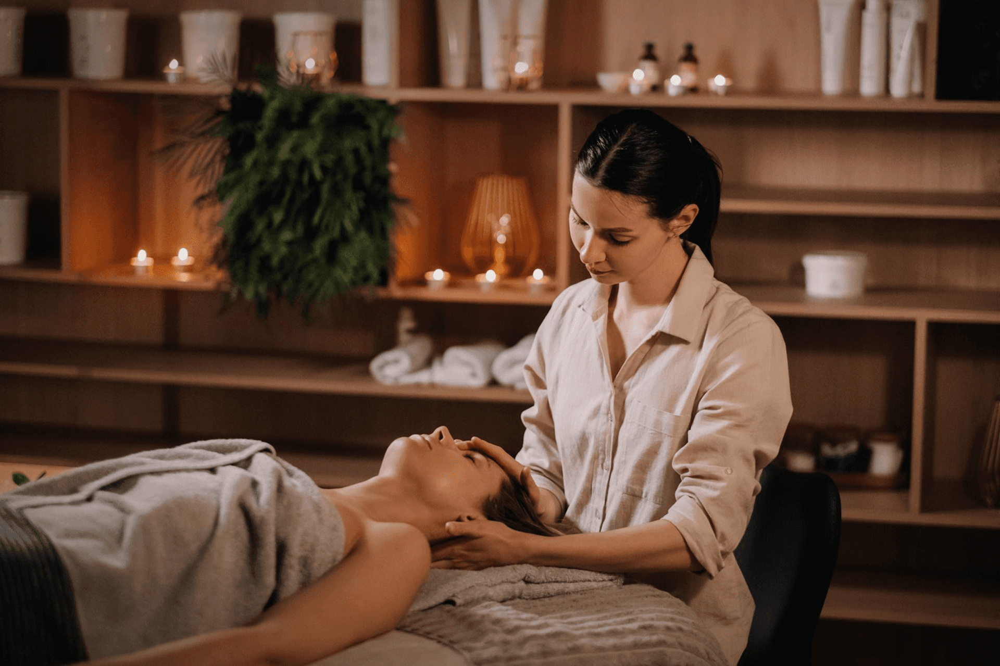

Blog
Sve što treba da znate o nezi kože i tela.
Stručni tekstovi o tretmanima, procedurama i protokolima iz naše ponude, pišemo ih da vam pomognemo da odaberete pravi put za svoju kožu.

Zakažite konsultaciju
Niste sigurni koji je
tretman za vas?
Pozovite nas ili nam pišite, naš tim će vam pomoći da odaberete pravi plan za vašu kožu.